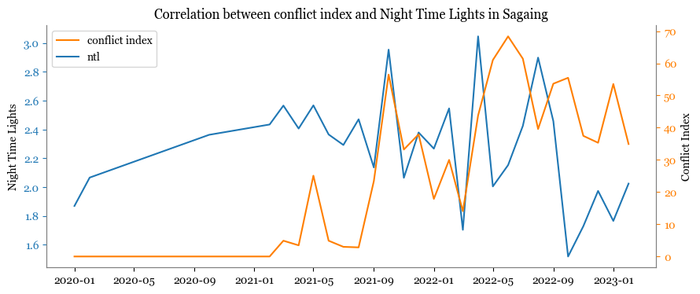

The Story of Sagaing#
As early as April 11, 2023, the Myanmar military used “thermobaric” munition for an attack on the oppoisition building. The region of Sagaing has seen conflict consistently since early 2021 when the government led by Aung San Suu Kyi’s party was overthrown by the military. In this notebook we see some correlations between ACLED Conflict Index data and change in Night Time Lights in Sagaing.
acled_adm2_disagg = convert_to_gdf(acled)
acled_adm2_disagg = myanmar_adm2.sjoin(acled_adm2_disagg)[[ 'event_date', 'fatalities', 'event_type', 'sub_event_type' ]+['ST']].groupby(['event_type','sub_event_type',pd.Grouper(key='event_date', freq='M', closed='left')]+['ST'])['fatalities'].agg(['sum', 'count']).reset_index()
c:\Users\sahit\anaconda3\envs\turkey-rdna\lib\site-packages\geopandas\geodataframe.py:2061: UserWarning: CRS mismatch between the CRS of left geometries and the CRS of right geometries.
Use `to_crs()` to reproject one of the input geometries to match the CRS of the other.
Left CRS: GEOGCS["WGS 84",DATUM["WGS_1984",SPHEROID["WGS 84" ...
Right CRS: EPSG:4326
return geopandas.sjoin(left_df=self, right_df=df, *args, **kwargs)
Events that occured in Sagaing since 2021#
The military torched homes in Sagaing in September 2021. News Report
August - October 2022 there was a cutoff of internet News Report
Show code cell source
import matplotlib.pyplot as plt
plt.rcParams["font.family"] = "Georgia"
plt.show()
fig, axs = plt.subplots(1,1, figsize=(10,4))
ax=axs#.flatten()
#for i, ST in enumerate(['Sagaing']):
df1 = df[df['NAME_2']=='Sagaing']
ax.plot(df1['date'], df1['ntl_bm_mean'], '#1F77B4',label = 'ntl')
ax.set_ylabel('Night Time Lights')
ax.tick_params('y', colors='#1F77B4')
ax1 = ax.twinx()
ax1.plot(df1['date'], df1['conflictIndex'], '#FF7F00', label='conflict index')
ax1.set_xlabel('x')
ax1.set_ylabel('Conflict Index')
ax1.tick_params('y', colors='#FF7F00')
ax1.spines['top'].set_visible(False)
ax.spines['top'].set_visible(False)
ax.spines['left'].set_color('grey')
ax1.spines['left'].set_color('grey')
ax.spines['right'].set_color('grey')
ax1.spines['right'].set_color('grey')
ax.spines['bottom'].set_color('grey')
ax1.spines['bottom'].set_color('grey')
lines = ax1.get_lines() + ax.get_lines()
labels = [line.get_label() for line in lines]
ax.legend(lines, labels, loc='upper left')
ax.set_title('Correlation between conflict index and Night Time Lights in Sagaing')
Text(0.5, 1.0, 'Correlation between conflict index and Night Time Lights in Sagaing')

acled_adm2_disagg[(acled_adm2_disagg['ST']=='Sagaing')&(acled_adm2_disagg['event_date']=='2021-10-31')]
| event_type | sub_event_type | event_date | ST | sum | count | |
|---|---|---|---|---|---|---|
| 167 | Battles | Armed clash | 2021-10-31 | Sagaing | 451 | 59 |
| 494 | Explosions/Remote violence | Air/drone strike | 2021-10-31 | Sagaing | 0 | 2 |
| 676 | Explosions/Remote violence | Grenade | 2021-10-31 | Sagaing | 0 | 3 |
| 932 | Explosions/Remote violence | Remote explosive/landmine/IED | 2021-10-31 | Sagaing | 288 | 106 |
| 1305 | Explosions/Remote violence | Shelling/artillery/missile attack | 2021-10-31 | Sagaing | 0 | 7 |
| 1782 | Protests | Peaceful protest | 2021-10-31 | Sagaing | 0 | 93 |
| 2130 | Violence against civilians | Abduction/forced disappearance | 2021-10-31 | Sagaing | 0 | 2 |
| 2452 | Violence against civilians | Attack | 2021-10-31 | Sagaing | 86 | 70 |
acled_adm2_disagg[(acled_adm2_disagg['ST']=='Sagaing')&(acled_adm2_disagg['event_date']=='2022-06-30')]
| event_type | sub_event_type | event_date | ST | sum | count | |
|---|---|---|---|---|---|---|
| 293 | Battles | Armed clash | 2022-06-30 | Sagaing | 644 | 111 |
| 529 | Explosions/Remote violence | Air/drone strike | 2022-06-30 | Sagaing | 15 | 8 |
| 721 | Explosions/Remote violence | Grenade | 2022-06-30 | Sagaing | 0 | 2 |
| 1063 | Explosions/Remote violence | Remote explosive/landmine/IED | 2022-06-30 | Sagaing | 172 | 68 |
| 1389 | Explosions/Remote violence | Shelling/artillery/missile attack | 2022-06-30 | Sagaing | 21 | 39 |
| 1851 | Protests | Peaceful protest | 2022-06-30 | Sagaing | 0 | 103 |
| 2191 | Violence against civilians | Abduction/forced disappearance | 2022-06-30 | Sagaing | 0 | 8 |
| 2578 | Violence against civilians | Attack | 2022-06-30 | Sagaing | 118 | 55 |
| 2746 | Violence against civilians | Sexual violence | 2022-06-30 | Sagaing | 0 | 1 |
acled_adm2_disagg[(acled_adm2_disagg['ST']=='Sagaing')&(acled_adm2_disagg['event_date']=='2022-10-31')]
| event_type | sub_event_type | event_date | ST | sum | count | |
|---|---|---|---|---|---|---|
| 355 | Battles | Armed clash | 2022-10-31 | Sagaing | 202 | 82 |
| 564 | Explosions/Remote violence | Air/drone strike | 2022-10-31 | Sagaing | 8 | 31 |
| 742 | Explosions/Remote violence | Grenade | 2022-10-31 | Sagaing | 10 | 5 |
| 1125 | Explosions/Remote violence | Remote explosive/landmine/IED | 2022-10-31 | Sagaing | 108 | 45 |
| 1440 | Explosions/Remote violence | Shelling/artillery/missile attack | 2022-10-31 | Sagaing | 10 | 26 |
| 1874 | Protests | Peaceful protest | 2022-10-31 | Sagaing | 0 | 86 |
| 2223 | Violence against civilians | Abduction/forced disappearance | 2022-10-31 | Sagaing | 0 | 7 |
| 2637 | Violence against civilians | Attack | 2022-10-31 | Sagaing | 47 | 23 |